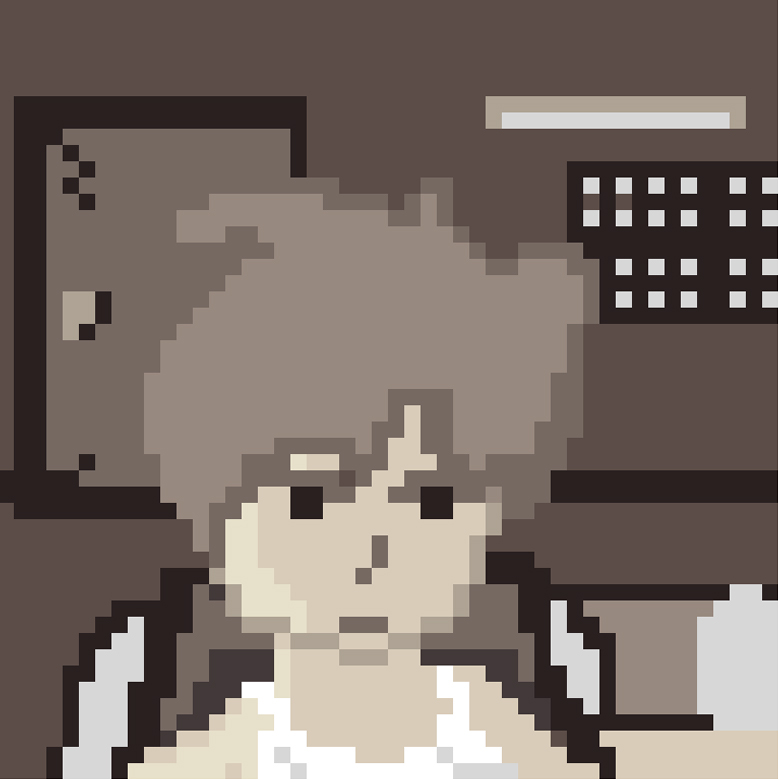
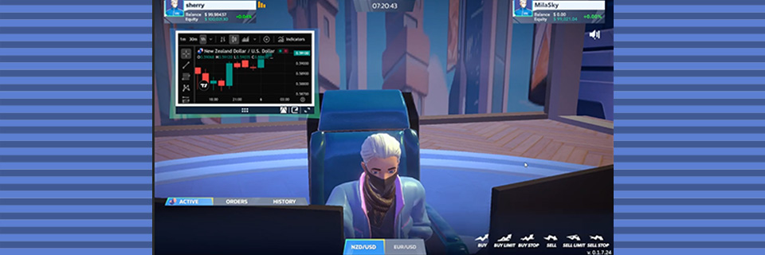
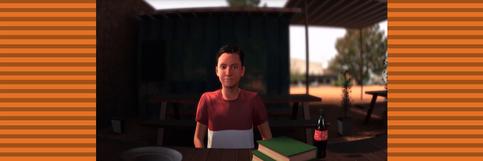
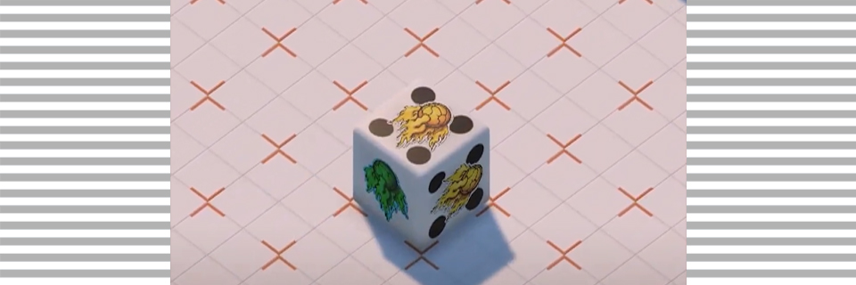
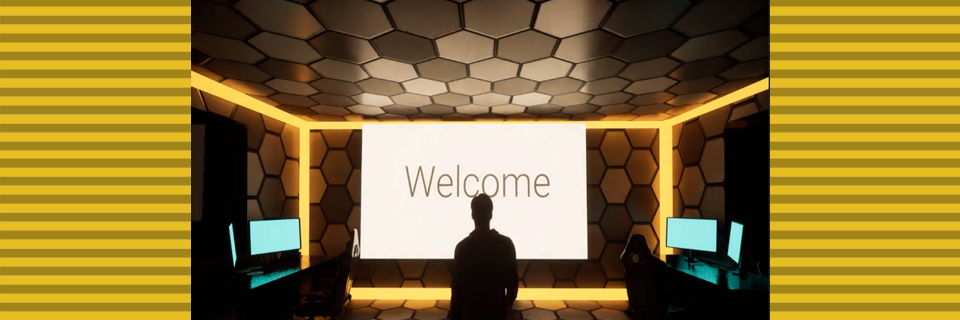
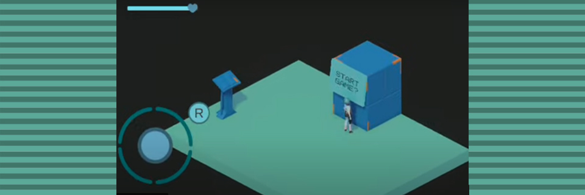
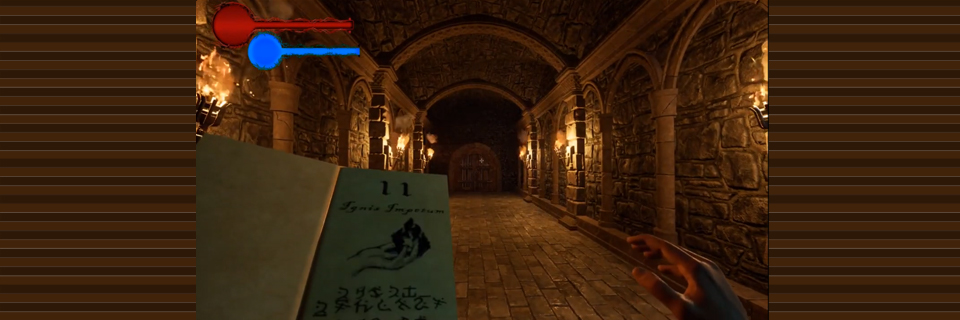
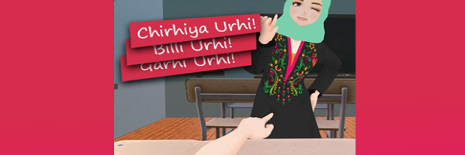
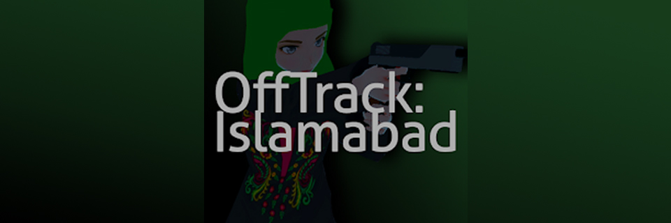
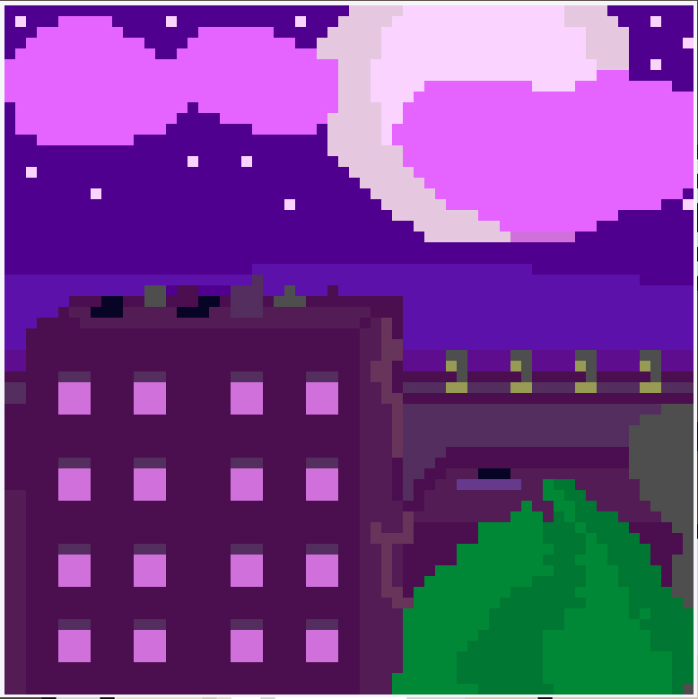

A little about me

I’m Shehryar Malik, a gameplay programmer focused on building solid, scalable game systems. My core work includes gameplay mechanics, multiplayer networking, and backend integration using Unity and Unreal Engine. Over the years, I’ve worked across multiple areas of game development, but programming and system design are where I deliver the most value.
I have developed and contributed to a range of projects, including hyper-localized titles such as Offtrack: Islamabad and Chiriya Urhi. These projects involved building complete gameplay systems, optimizing performance, and delivering production-ready features. You can explore them in the projects section.
I regularly work on new systems and technical experiments to stay sharp — from multiplayer architecture and backend workflows to gameplay mechanics and performance optimization. Some of this work is showcased in the experiments section.
If you're looking for help with Unity/Unreal development, multiplayer systems, debugging, or backend integration, feel free to reach out through the contact section.
Projects
Project UTC

Lead Developer for a "Gamified" Forex Binary Options Platform.
Project UTC demo:
Unity VR Avatar for ChatGPT

A Unity VR Avatar powered by ChatGPT. You can have conversations with the A.I in a 3D Environment.
Unity VR AI demo:
Unity ability system: Die abilities

I developed a flexible ability system in Unity, and this is one of the ideas I've been playing with. The die can attach different ability stickers on each face to acquire new abilities. After using an ability, the die switches to a random one. I've had this idea for a while and created it for fun, but I might give this project more time. The Ludo piece enemy is next!
Unity Die Abilities Demo:
a promotional video using Metahumans and Vroid

Just a promotional video I created, using Metahumans (Unreal) and Vroid (Unity), while learning how to animate characters. This is the first time I used motion capture (using Iphone). It was a great experience.
Metahuman Vroid demo:
GateRunner (Winter Gamejam 2023)

My submission for Mindstorm's Winter game jam 2023. I consider this my best unity game so far. Managed to get modular design just right.
The theme was Puzzles this time. The game is procedurally generated, each area has a "gate" that has a logic gate related puzzle that players need to solve to continue while fighting off glitches.
Gameplay of Gaterunner:
Doomage Demo

I had an idea for this game for a while, a procedurally generated mixture of doom and rogue like games.
Created in Unreal. Ignoring some graphics glitches, it turned out really good. It is just a demo for now but I will definitely complete it if I get the chance.
Gameplay of Doomage:
Chirhiya Urhi

I created chirhiya Urhi for Mindstorm Studios' Winter Game Jam 2022. The theme was surprisingly "All things desi". I had just created a hyper localized game for my FYP (Offtrack Islamabad) so I was already familiar with creating Pakistani localized content.
I chose the classic kids Chirhiya Urhi game for the project as everyone in Pakistan knows about it, and gave it anime-type setting.
I created the game in Unity engine, made all the assets in blender and Vroid studio. The game won the "Most Indigenous Idea" award in the game jam. This was a wonderful experience.
Following is the entire gameplay of the game:
You can download the APK of the game from here if you would like to try it yourself.
Offtrack: Islamabad

Offtrack: Islamabad, an attempt at my dream game. This was my University's final year project, a hyper localized game for Pakistani audience. The game is a third person action shooter game, inspired from
games like resident evil. This was my first serious project and I was doing it solo so things didn't exactly work out as I had imagined but It was overall the best learning experience I got in game development.
The game is released on Google Playstore, which was another achievement for me. You can check out the game from its store page: Offtrack: Islamabad.
Experiments
UE Metahuman Lipsync Test
Metahuman test I made while learning how to do lipsync. This was done using Iphone's Mocap and Keyframing combined.
Topdown units (XCOM like)
Top down, XCOM like gameplay experiment.
Cloth simulation ghost
A little experiment with Unreal's cloth simulation.
Music Invaders
Sound analysis based gameplay
A little experiment with Unreal's Audio Synesthesia analysis. The spheres are set to react on a certain threshold of audio frequencies of a audio file.
The left most is set to Midrange while the other two are Bass. When the threshold is reached they spawn a projectile aimed at the player. This mechanic can be used to create music based games.
Basic Procedural Generation
Basic procedural map Generation that I came up with while learning Procedural Generation. Each tile finds a good location to spawn the next tile using the little spheres around it.
Lights Puzzle Level
A simple puzzle level using lights, I created this as an excersie of Reality forge's Unreal course that I was taking.
Lyra Race Gamemode
A time race gamemode that I made while experimenting with Lyra.
G develop - 2d Click to move character
This is one of my many unfinished projects, I was making it for G-Develop's second GameJam but couldn't complete (Classic scope creep). The game was supposed to be
inspired from Neighbours from Hell. Even though I didn't finish it, I learned G-develop and 2D character animations using Illustrator and Dragonbones. With this project I realized 2D animations
are much harder than 3D (atleast for me).
Services I Offer

I help developers and teams build, debug, and optimize complex Unity and Unreal Engine systems.
My work focuses on solving real technical problems quickly and delivering production-ready solutions.
Gameplay Systems Development
Design and implementation of gameplay mechanics, modular systems, and scalable architecture for games of any scope.
Multiplayer & Networking
Real-time multiplayer implementation, synchronization fixes, Photon/FishNet integration, matchmaking systems, and debugging network issues.
Backend Integration (Firebase & APIs)
Authentication, databases, cloud functions, player data systems, live features, and backend-driven gameplay.
Debugging & Performance Optimization
Fixing broken builds, tracking down complex bugs, improving FPS, memory optimization, and solving platform-specific issues.
WebGL & Mobile Deployment
Build fixes, hosting issues, platform optimization, Android/iOS/WebGL deployment troubleshooting.
Systems & Prototyping
Rapid prototyping of new ideas, technical experiments, and building core systems for new or existing projects.
Available for freelance, short-term contracts, and technical problem-solving work.
Contact
If you need help with Unity, multiplayer systems, debugging, or backend integration, feel free to reach out.
Email: Shehryar.malik07@gmail.com
Contact number: +92-332-9318456